Cinco motores locales, clonación a partir de una muestra corta
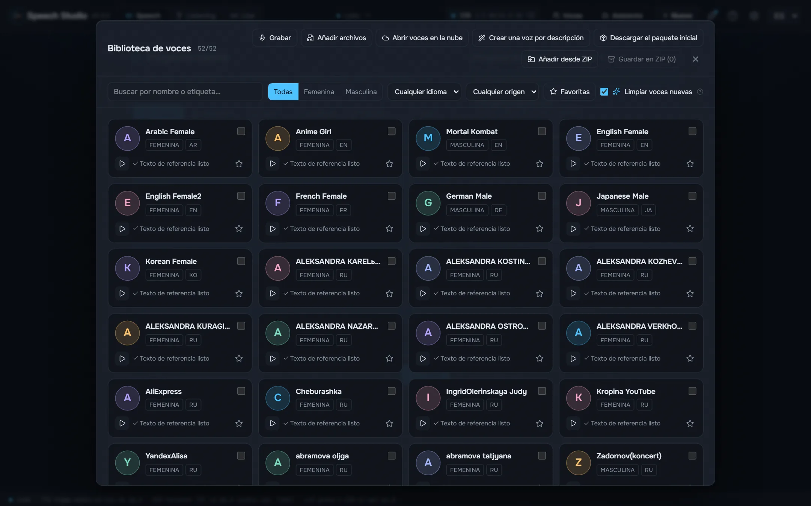
Higgs Audio v3, Fish Audio Drama 3, Supertonic 3, Qwen3-TTS y Qwen3-TTS con acento ruso funcionan en tu tarjeta.
Un estudio de escritorio que da voz al texto con cinco motores locales y convierte las grabaciones de nuevo en texto con quién habla.
Windows 10/11 x64 y una tarjeta NVIDIA con 8 GB de memoria de vídeo. Los modelos y motores se descargan desde el propio estudio, cuando tú decidas.
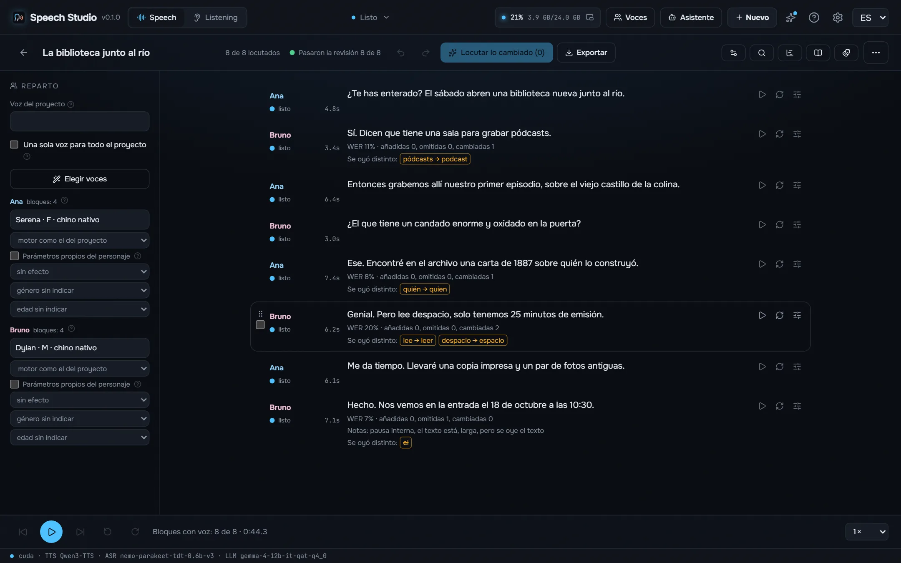
Hechos en este ordenador con el estudio tal como se distribuye, cada toma comprobada de oído y exportada tal como la guardó el estudio. Todos los motores leen el mismo texto.
¿Qué es poesía?, dices mientras clavas en mi pupila tu pupila azul. ¿Qué es poesía? ¿Y tú me lo preguntas? Poesía… eres tú.
Я помню чудное мгновенье — передо мной явилась ты, как мимолётное виденье, как гений чистой красоты.
Встреча 12.03 в 18:30, билет стоит 150 руб., а на улице −5 °C.
Shall I compare thee to a summer's day? Thou art more lovely and more temperate: rough winds do shake the darling buds of May, and summer's lease hath all too short a date.
Il pleure dans mon cœur comme il pleut sur la ville ; quelle est cette langueur qui pénètre mon cœur ?
Amor é fogo que arde sem se ver, é ferida que dói, e não se sente; é um contentamento descontente, é dor que desatina sem doer.
床前明月光，疑是地上霜。举头望明月，低头思故乡。
Las voces de personas conocidas son síntesis: un clon hecho a partir de una muestra corta del paquete de voces del estudio, no una grabación de esas personas. Los poemas son de dominio público.
Supertonic 3 y Qwen3-TTS colocan el acento ruso al azar. El estudio lo marca antes de que lea el motor: RUAccent elige замо́к o за́мок, му́ки o муки́ según la frase, y los números, fechas y unidades se escriben con letras en su caso.
Старинный замок стоял на холме, а дверь в него запирали на тяжёлый замок. Из этой муки пекут хлеб, но для пекаря это настоящие муки.
Мы долго стояли у берега и смотрели, как белки прыгают по веткам. В яйце много белка, а в этой задаче много лишних белков.
Medido en una RTX 4090 con Windows 11 y Speech Studio 0.2.0 tal como se instala: el mismo texto ruso de 17 segundos, la segunda ejecución de cada motor, con su modelo ya cargado. El primer sonido es el tiempo hasta que empieza el audio en la ventana; la memoria de vídeo es el pico mientras habla.
| Motor | Para | Más rápido que el tiempo real | Primer sonido | Streaming | Descarga | Memoria de vídeo |
|---|---|---|---|---|---|---|
| Supertonic 3 | El más rápido, voces fijas sin clonación | 168× | 103 ms | Por frase | 0,1 GB | 1,0 GB |
| Qwen3-TTS | Rápido, voces predefinidas y clonación | 12× | 19 ms | Mientras habla | 2,2 GB | 3,1 GB |
| Qwen3-TTS + ru stress LoRA | Ruso con los acentos correctos, clonación | 10× | 26 ms | Mientras habla | 2,3 GB | 3,5 GB |
| Fish Audio Drama 3 | La mejor interpretación y calidad, clonación; desde 6 GB de memoria de vídeo | 7,0× | 326 ms | Mientras habla | 21,4 GB | 21,9 GB |
| Higgs Audio v3 | Emociones y sonidos con etiquetas, clonación | 2,3× | 1,0 s | Mientras habla | 5,3 GB | 18,1 GB |
Medido en el mismo ordenador con Speech Studio 0.2.1 tal como se instala: una grabación rusa de 5 minutos de una sola voz transcrita en Listening sin separar hablantes, con la carga del modelo incluida. × indica cuántas veces más rápido que la duración de la grabación; la memoria de vídeo es el pico durante la tarea, y el modelo la libera al terminar.
| Modelo | Para | En la tarjeta | En el procesador | Idiomas | Descarga | Memoria de vídeo |
|---|---|---|---|---|---|---|
| Parakeet TDT v3 | Rápido y preciso, detecta el idioma solo | 96× | 33× | 25 | 0,7 GB | 1,2 GB |
| Parakeet Ultra | Parakeet ajustado por Moondream: menos errores de reconocimiento | 73× | 33× | 25 | 0,7 GB | 1,0 GB |
| Nemotron 3.5 | El idioma se fija, sin palabras sueltas en otro | 73× | 29× | 28 | 0,7 GB | 1,0 GB |
Cada paso de un turno de conversación, medido en el mismo ordenador. El paso más largo es lo que piensa el propio agente y depende del agente y su modelo.
| Tu frase como texto después de que dejas de hablar (Parakeet en la tarjeta, incluida la pausa que cierra la frase) | 641 ms – 735 ms |
| El agente escribe su respuesta (Claude Sonnet, medido) | 2,0 s – 3,9 s |
| Primer sonido de la respuesta (según el motor, ver arriba) | 19 ms – 1,0 s |

Higgs Audio v3, Fish Audio Drama 3, Supertonic 3, Qwen3-TTS y Qwen3-TTS con acento ruso funcionan en tu tarjeta.
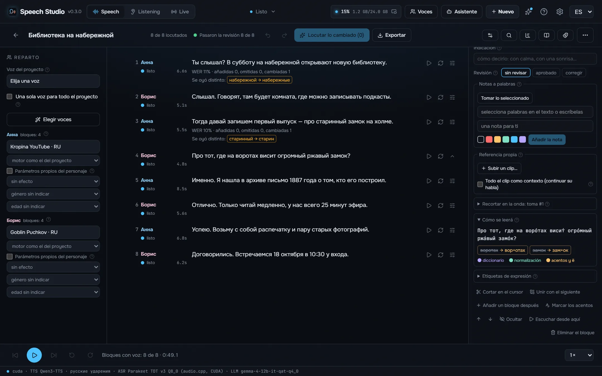
Los números en el caso y género correctos, las fechas, horas, cantidades de dinero y unidades se escriben con letras antes de que lea el motor.
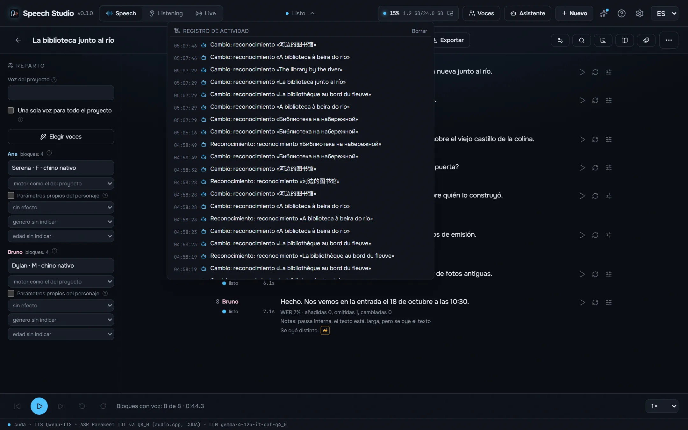
Cada toma se reconoce de vuelta y se compara con el texto palabra por palabra, con comprobaciones de saturación, silencio, corte, chasquido, frase repetida y ruido en lugar de voz.
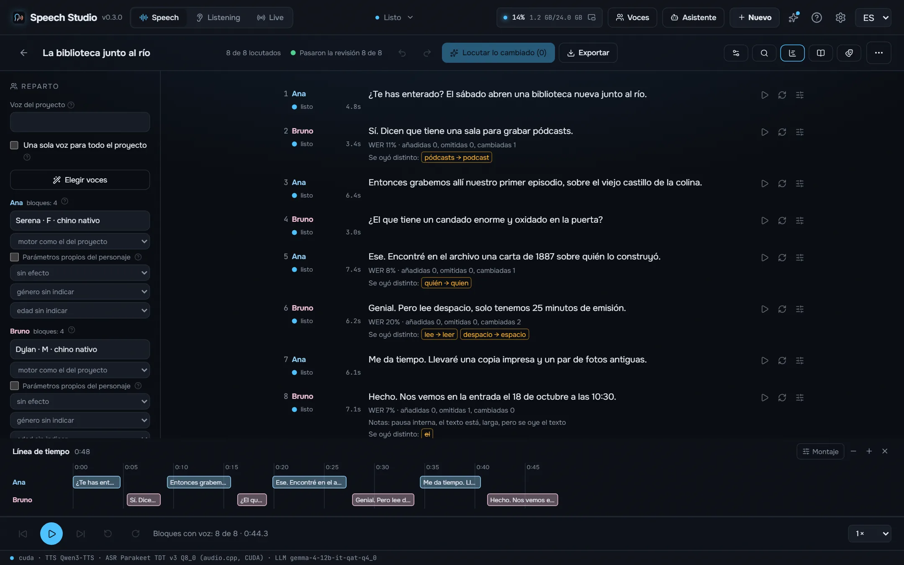
Las líneas «Ana:» y «[Ana]» se convierten en personajes con sus propias voces, el director escribe un pódcast sobre un tema para varias voces y la línea de tiempo muestra cada solapamiento.
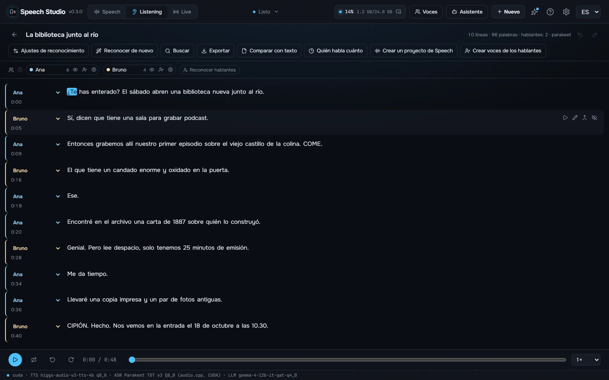
Una grabación, un vídeo o un enlace se convierten en una transcripción con quién dijo qué y cuándo: Parakeet-TDT, Nemotron 3.5 o Whisper, hasta ocho hablantes, reproductor karaoke, corte por texto y exportación a SRT, VTT, ASS, TXT o JSON.
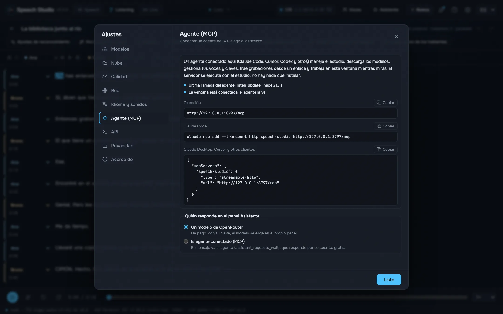
Mientras el estudio está abierto, un agente como Claude Code o Cursor hace por MCP todo lo que hace la ventana: da voz a un texto en un archivo, edita proyectos, asigna voces, transcribe y comprueba grabaciones.
El propio estudio, en tu idioma.
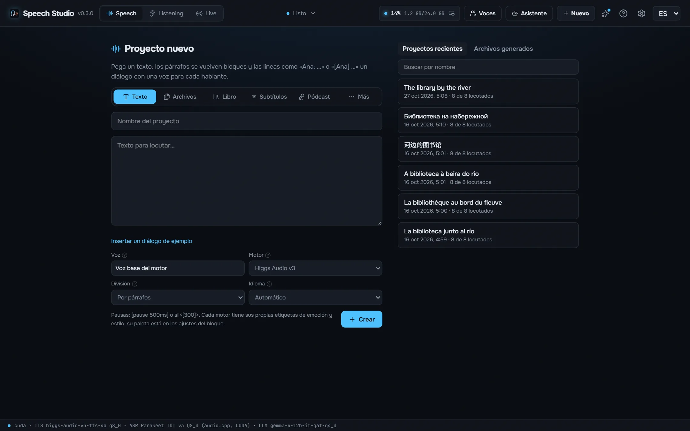
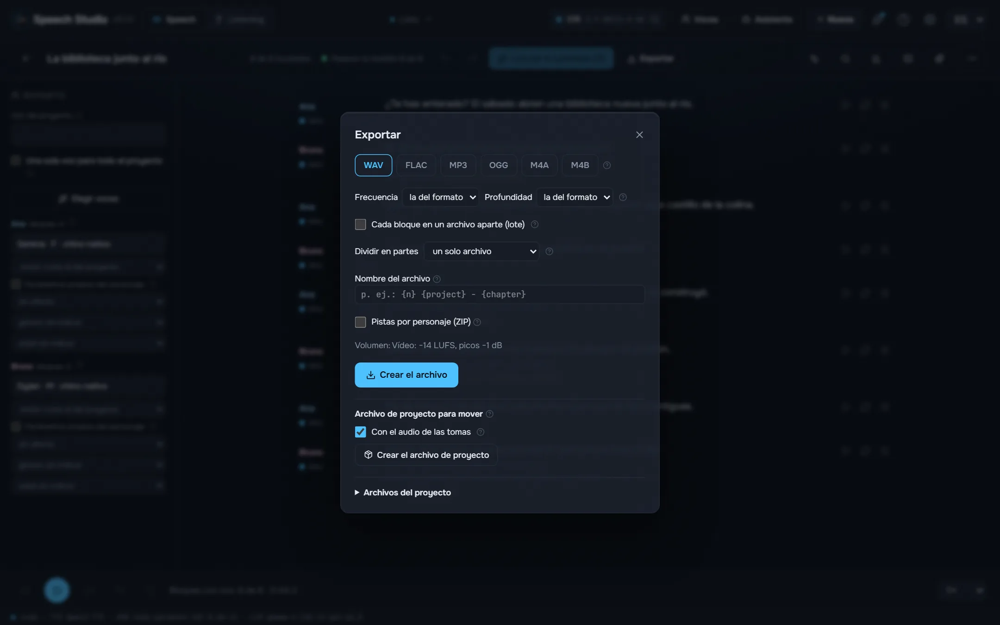
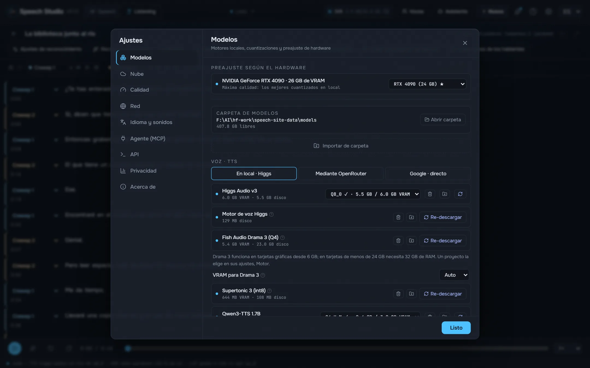
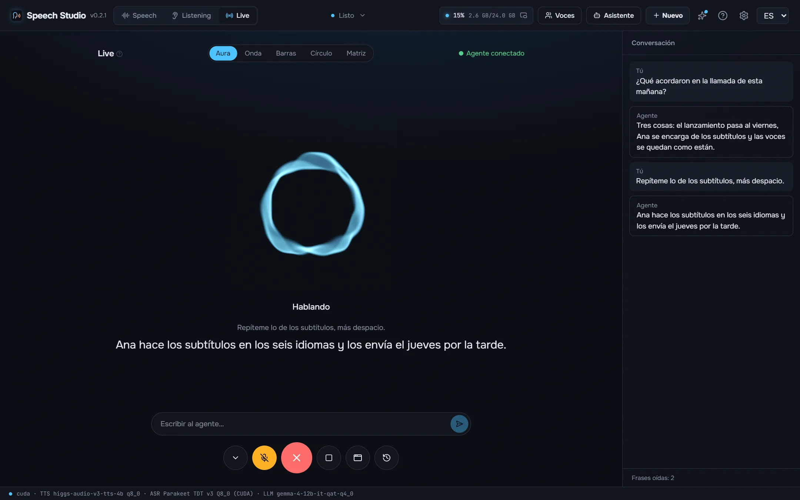
Una NVIDIA con 8 GB de memoria de vídeo o más y un controlador reciente. Drama 3 cabe entera en 24 GB; desde 6 GB sus expertos viven en la RAM, que entonces necesita 32 GB. Unos 9 GB de disco para los modelos y motores por defecto.
Sí. El estudio es gratuito y de código abierto, y los modelos se descargan gratis desde él.
Tus textos y grabaciones son tuyos y se quedan en tu disco.
Los números en el caso y género correctos, las fechas, horas, cantidades de dinero y unidades se escriben con letras antes de que lea el motor. El acento, la «ё» y los homógrafos los coloca RUAccent según la frase.
Supertonic 3 y Qwen3-TTS colocan el acento ruso al azar. El estudio lo marca antes de que lea el motor: RUAccent elige замо́к o за́мок, му́ки o муки́ según la frase, y los números, fechas y unidades se escriben con letras en su caso.
El estudio es MIT. Los modelos no: cada uno conserva su propia licencia, listada en el README. Léelas antes de publicar o vender lo que locutes. README
Mientras el estudio está abierto, un agente como Claude Code o Cursor hace por MCP todo lo que hace la ventana: da voz a un texto en un archivo, edita proyectos, asigna voces, transcribe y comprueba grabaciones. Las herramientas escritas para el audio de OpenAI funcionan con su API compatible.
claude mcp add --transport http speech-studio http://127.0.0.1:8797/mcp
El servicio está compilado dentro del exe de escritorio y ejecuta los motores en el mismo proceso a través de sus C ABI. Ni un solo proceso de Python en ejecución.
React UI ─┐
├─ Speech Studio.exe (Tauri window + Rust/axum speech-server)
Rust axum ┘ │
├─ Higgs Audio v3, Drama 3, Qwen3-TTS (C++/CUDA, GGUF)
├─ Parakeet, Nemotron 3.5 (transcribe.cpp, GGUF)
└─ Supertonic, RUAccent (ONNX Runtime)